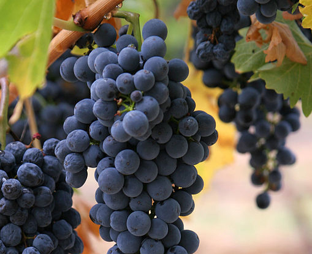

Grapes
Grapes can be eaten raw or they can be used for making wine, jam, juice, jelly, grape seed extract, raisins, vinegar, and grape seed oil.
Grapes can be eaten raw or they can be used for making wine, jam, juice, jelly, grape seed extract, raisins, vinegar, and grape seed oil.